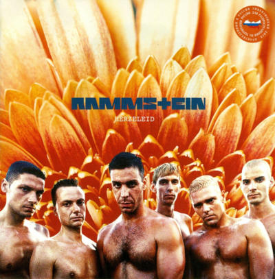
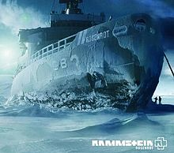

15 Rammstein

Rammstein es una banda alemana de metal industrial formada en 1994 por los músicos Till Lindemann, Richard Z. Kruspe, Oliver Riedel, Paul Landers, Christian Lorenz y Christoph Schneider.2 Su música se basa en una corriente surgida en su país en los años 1990 llamada Neue Deutsche Härte del que son su exponente más popular y al que también pertenecen, entre otros, Oomph! y Die Krupps. Ellos mismos han denominado en alguna ocasión esta mezcla con el apelativo de Tanzmetall («metal de baile»).
Integrantes Actuales: Till Lindemann, Richard Z. Kruspe, Christoph Schneider, Oliver Riedel, Paul H. Landers, Christian «Flake» Lorenz.
Top Albums

Herzeleid

Sehnsucht

Rosenrot